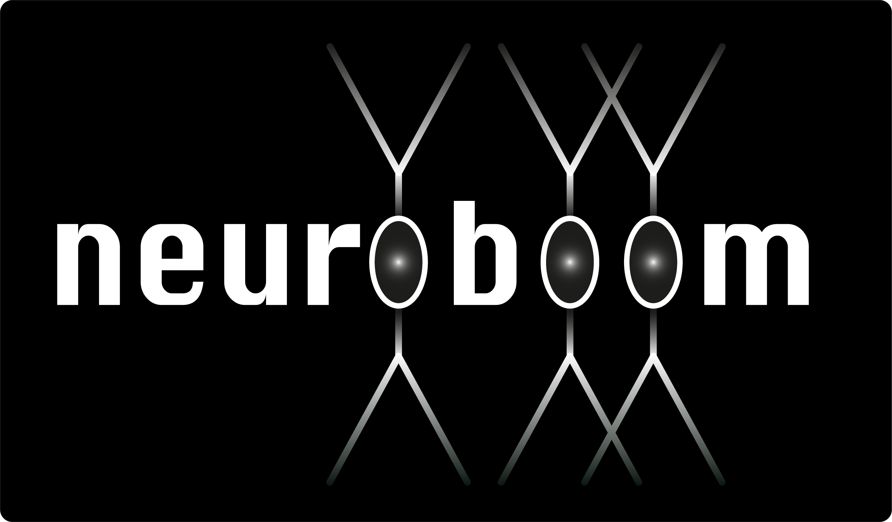

neuroboom¶
Welcome to neuroboom!
{kind=link}
Neuroboom is a suite of Python3 tools for analysing neuron reconstructions within Connectomic initiatives. Neuroboom is currently designed to operate on neuron recontructions within the CATMAID or Neuprint platforms.
These two different platforms reflect the two available connectomic efforts in the fruit fly, Drosophila melanogaster:
the Full Adult Female Brain (FAFB) Zheng et al., 2018, Cell
the Hemibrain, Scheffer et al., 2020, eLife
Some code incorporated within the neuroboom package has been presented in scientific papers, most notably the dendrogram functions:
Integration of Parallel Opposing Memories Underlies Memory Extinction, J. Felsenberg et al., 2018, Cell
Input Connectivity Reveals Additional Heterogeneity of Dopaminergic Reinforcement in Drosophila, N. Otto, MW Pleijzier et al., 2018, Current Biology
Convergence of distinct subpopulations of mechanosensory neurons onto a neural circuit that elicits grooming, S. Hampel et al., 2020, biorXiv